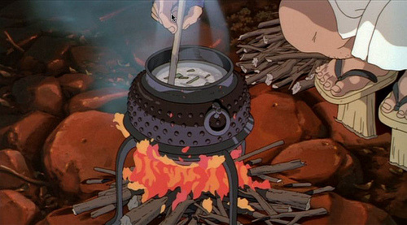

Rice Porridge (Okayu) from Princess Mononoke

Description
Japanese rice porridge, also known as okayu, is a staple comfort food in Japan. At its most basic, it consists of only water and rice. This recipe, inspired by the okayu seen in Princess Mononoke, has some additions that will really up the flavor levels of the dish. If you have trouble finding any of the ingredients, try heading to your nearest Asian market and searching there.
Ingredients
- 2 cups white rice
- 6 cups water
- 3 tbsp dashi miso paste
- Soy sauce
- 4 eggs
- Diced basil
- Hot chili/sesame oil
Steps
- Add the rice and water to a pot over high heat.
- Once boiling, cover the pot and turn the heat to low. Let simmer for 40 minutes or until it turns soft and porridge-like.
- Add the miso paste and a splash of soy sauce (or more, to taste), and mix over low heat until the miso paste is completely dissolved (about five minutes).
- In a separate bowl, whisk eggs until light and fluffy.
- Pour egg mixture into pot with rice and eggs, stirring to combine and then removing from heat.
- Serve in bowls and top with basil, chili oil, and/or sesame oil.
- Enjoy!